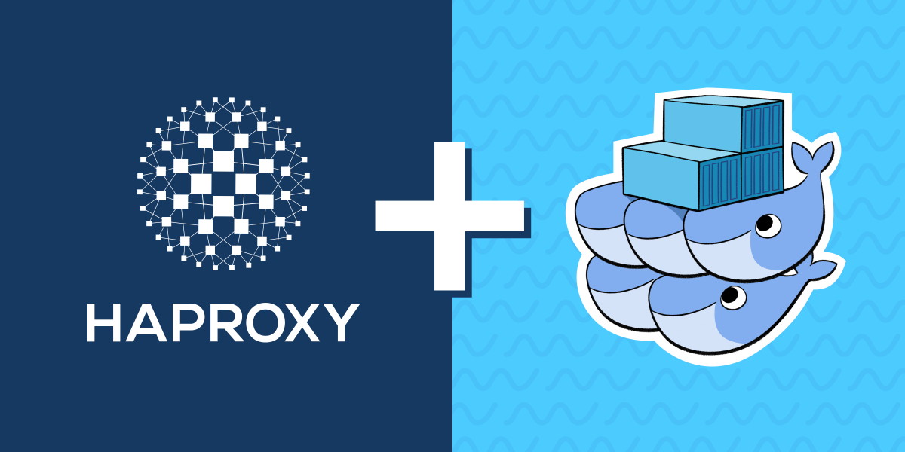
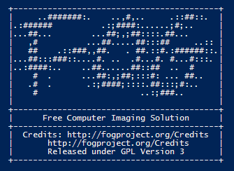

Épreuves BTS SIO (SISR)
Travaux pratiques, fiches descriptives officielles et documents professionnels réalisés durant mes deux années de formation.
E5 – Réalisations professionnelles
Cette section regroupe l'ensemble des projets que j'ai menés durant tout mon cursus de BTS. Ces travaux témoignent de ma progression et de la diversité des compétences techniques acquises.
Tableau de synthèse
Le document officiel récapitulant toutes les compétences et réalisations validées au cours de mes deux années de formation.
E6 – Projets personnels
Dans le cadre de mon apprentissage, j'ai réalisé en autonomie deux projets personnels majeurs. Ils illustrent ma capacité à concevoir et mettre en œuvre des solutions techniques répondant à des problématiques de haute disponibilité et de déploiement.
1. Mise en place d'un Intranet en Haute Disponibilité
Réalisation d'une infrastructure pour un site intranet statique garantissant une continuité de service maximale.

Architecture : Mise en place d'une redondance sur trois sites tournant en boucle avec un HAProxy pour la répartition de charge.
Gestion des données : Chaque machine dispose de son propre dossier de stockage. Les modifications effectuées en local sont automatiquement répercutées sur les trois instances du site.
2. Déploiement d'images via Serveur FOG
Conception d'une solution automatisée pour la gestion d'un parc informatique.

Solution : Installation et paramétrage d'un serveur FOG pour automatiser le clonage des postes.
Attestations de stage
Périodes d'immersion professionnelle en entreprise :
Stage de 1ère année
Période d'immersion pratique en infrastructure système et support.
📄 Voir l'attestationStage de 2ème année
Spécialisation en administration de parcs, serveurs et sécurité réseau.
📄 Voir l'attestation